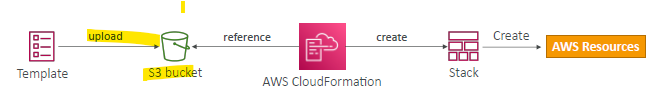
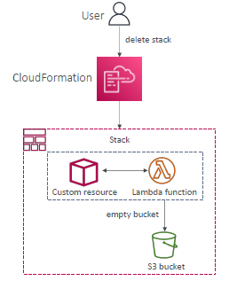
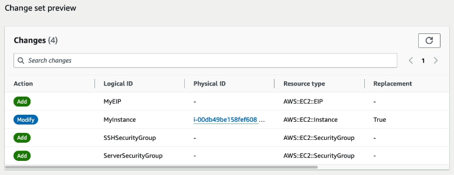
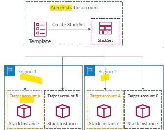

Cloud Formation (IAC)¶
A. Intro¶
- declarative way of provisioning AWS Infrastructure
- IAC
- stack-1 (for vpc)
- reource-1 (tags - stackid(arn), logicalId, physicalId,etc)
- rsource-2
- ...
- resolves order / dependency

- stack-2 (app stack)
- ...
- versioned in git
- app composer to visualize
- cost
- Each resources within the stack is tagged with an identifier so you can easily see how much a stack costs you
- estimate the costs of your resources
- schedule to destroy and re-create, to save cost.

B. Template¶
1. overview¶
• AWSTemplateFormatVersion – identifies the capabilities of the template “2010-09-09”
• Description – comments about the template
• Resources (MANDATORY) – your AWS resources declared in the template
• Parameters – the dynamic inputs for your template
• Mappings – the static variables for your template
• Outputs – references to what has been created
• Conditionals – list of conditions to perform resource creation
2. resource¶
reference¶
- check : https://docs.aws.amazon.com/AWSCloudFormation/latest/UserGuide/aws-template-resource-type-ref.html

- 700+ resource with example and doc.
- will use CDK anyway.
2.1 Custom resource ¶
- certain resources not support
- use
CF custom resource- backed by lambda - serviceToken (arm od lambda)

- usecase-1: empty s3 bucket before delete.
- 
2.2 Delete Policy¶
- resource-1
- DeletePolicy=
Delete(default)- for s3, bucket must be empty
- for s3, bucket must be empty
- DeletePolicy=
Retain - DeletePolicy=
Snapshot- for EBS volume
- databases :
- RDS
- DocumnetDB
- ElastiCache
- Neptune
- ...
- DeletePolicy=
3. parameter (dynamic input)¶

- refer/use them
- !Ref parameter1
- Fn::Ref parameter1, or resource1
# -- parameter --
- Type
• String • Number • CommaDelimitedList
• List<Number>
• AWS-Specific Parameter + List<AWS-Specific Parameter>
• SSM Parameter (get parameter value from SSM Parameter store)
- Default
- Description
- Constarint
• Min/MaxLength
• Min/MaxValue
• AllowedValues (array)
• AllowedPattern (regex)
• NoEcho (Boolean) : for passowrd feild, so wont be logged/dispalyed anywhere
AWS::AccountId 123456789012
AWS::Region us-east-1
AWS::StackId arn:aws:cloudformation:us-east-1:123456789012:stack/MyStack/1c2fa620-982a-11e3-aff7-50e2416294e0
AWS::StackName MyStack
AWS::NotificationARNs [arn:aws:sns:us-east-1:123456789012:MyTopic]
AWS::NoValue Doesn’t return a value
4. mapping : map(string,object)¶
- static variable, fixed hardcoded value
- use/refer
- !FindInMap [ map-1, key, object-attribute-1]

5. output (optional)¶
- must be unique in region
- print for console
- IAC-1 (collaboration)
- stack-1(vpc-1) : output export
vpc-id - stack-2(app-1) : refer
vpc-idin this stack - eg:


6. Conditional¶
- conditionally create resource.
- eg based on env type.
Parameters: envType: Description: "The environment type (prd or dev)" Type: "String" AllowedValues: - prd - dev Default: "dev" Conditions: IsProd: !Equals [!Ref envType, "prd"] # True if envType is 'prd' IsDev: !Equals [!Ref envType, "dev"] # True if envType is 'dev' IsNotProd: !Not [!Equals [!Ref envType, "prd"]] # True if envType is not 'prd' IsProdOrDev: !Or - !Equals [!Ref envType, "prd"] - !Equals [!Ref envType, "dev"] # True if envType is 'prd' or 'dev' IsNotDev: !Not [!Equals [!Ref envType, "dev"]] # True if envType is not 'dev' IsProdAndNotDev: !And - !Equals [!Ref envType, "prd"] - !Not [!Equals [!Ref envType, "dev"]] # True if envType is 'prd' and not 'dev' Resources: Resource1: Type: "AWS::S3::Bucket" Condition: IsProd ... Resource2: Type: "AWS::DynamoDB::Table" Condition: !Not [IsProd] ... Resource3: Type: "AWS::Lambda::Function" Condition: IsProdOrDev ... Resource4: Type: "AWS::SNS::Topic" Condition: IsProdAndNotDev ...
6. Intrinsic function¶
!Refresource | parameter- resource-1 : returns resource-1.id
- parameter-1 : returns value
!GetAttresource.attributename- !GetAtt ec2-i1.id
- !GetAtt ec2-i1.AvialabilityZone
- ...
!FindInMap!ImportValue!Base64- conditions ::
!Equals. !And !If !Not !Or - ...
7. input from SSM + secretManager¶

99. more¶
stackUpdate¶
successfailed(stack failure options)- option-1: preserve provisioned resource
- option-2 rollback to previous working stack (default)
successfail: (if some has manual interruption on resource)- manually fix resource
- call
ContinueUpdateRollbackfrom console/cli to get things in sync
changeset¶
- change in template - add, modify (replacemnet=true/false), etc
- 
stackSet¶
- AWS org
- admin account
- child accounts/s

C. Security ¶
1. IAM role¶
- being used for running stack
- Borad-access-role
iam:PassRoleiam:getRoleCloudformation:*- pipelineRole-1
-
s3:* -

-
login in with Board-access-role
- by default, it will be used for deploying stack.
- or can explicitly choose other role/s :
- pipelineRole-1 : can create only s3, then.
2. stack policy¶
- resource policy like s3 policy,etc
- goal is to protect, resource from unintentional updates
3. CAPABILITY¶
3.1. Create iam role from stack¶
- need to capability for that
- CAPABILITY_IAM
- CAPABILITY_NAMED_IAM
- else
InsufficientCapabilitiesException
3.2 Include nested-stack¶
- need to capability
- CAPABILITY_AUTO_EXPAND
- else
InsufficientCapabilitiesException
4. termination protection¶
- disable (default)
- allows to delete stack
- if enabled, then won't allow anyone to delete stack.
D. Example¶
1. EC2 example with short desc.¶
AWSTemplateFormatVersion: "2010-09-09" # Identifies the capabilities of the template.
Description: "Sample CloudFormation template for deploying a web server." # Comments about the template.
Parameters: # Dynamic inputs for your template.
InstanceType: # Logical name for the parameter.
Description: "EC2 instance type" # Description of the parameter.
Type: "String" # Type of the parameter (e.g., String, Number).
Default: "t2.micro" # Default value for the parameter.
AllowedValues: # Allowed values for the parameter.
- "t2.micro"
- "t2.small"
ConstraintDescription: "Must be a valid EC2 instance type."
Mappings: # Static variables for your template.
RegionMap:
us-east-1:
AMI: "ami-0abcdef1234567890" # AMI for US East (N. Virginia).
us-west-1:
AMI: "ami-0fedcba9876543210" # AMI for US West (N. California).
Resources: # Contains definitions of AWS resources to be created (MANDATORY).
MyEC2Instance: # Logical name for the EC2 instance.
Type: "AWS::EC2::Instance" # Specifies the resource type (an EC2 instance in this case). # service-provider::service-name::data-type-name
Properties: # Contains properties to configure the resource.
InstanceType: !Ref InstanceType # Uses the parameter for instance type.
KeyName: "MyKeyPair" # Name of the key pair for SSH access.
ImageId: !FindInMap [RegionMap, !Ref "AWS::Region", AMI] # Uses mappings to select the AMI.
SecurityGroupIds: # Specifies security groups for the instance.
- !Ref MySecurityGroup # References the security group defined below.
Tags: # Adds metadata to the instance.
- Key: "Name"
Value: "WebServer"
MySecurityGroup: # Logical name for the security group.
Type: "AWS::EC2::SecurityGroup" # Specifies the resource type (a security group in this case).
Properties: # Contains properties to configure the security group.
GroupDescription: "Allow HTTP and SSH access" # Description of the security group.
SecurityGroupIngress: # Rules for inbound traffic.
- IpProtocol: "tcp" # Protocol type (TCP).
FromPort: 22 # Allows SSH traffic.
ToPort: 22
CidrIp: "0.0.0.0/0" # Allows traffic from all IP addresses.
- IpProtocol: "tcp"
FromPort: 80 # Allows HTTP traffic.
ToPort: 80
CidrIp: "0.0.0.0/0"
Conditions: # List of conditions to perform resource creation.
CreateProdResources: !Equals [!Ref "AWS::Region", "us-east-1"] # Example condition based on region.
Outputs: # References to what has been created.
InstanceId: # Logical name for the output.
Description: "ID of the EC2 instance" # Description of the output.
Value: !Ref MyEC2Instance # References the EC2 instance to get its ID.
PublicIP: # Logical name for the output.
Description: "Public IP address of the EC2 instance" # Description of the output.
Value: !GetAtt MyEC2Instance.PublicIp # Retrieves the public IP address of the EC2 instance.
Cli¶
cfn-init  ¶
¶
- helper script to initialize and configure EC2 instances.
- It reads the AWS::CloudFormation::Init metadata from a CloudFormation template
- and executes the specified configuration tasks, such as:
Installing packages <<< Configuring files Running shell commands Managing services